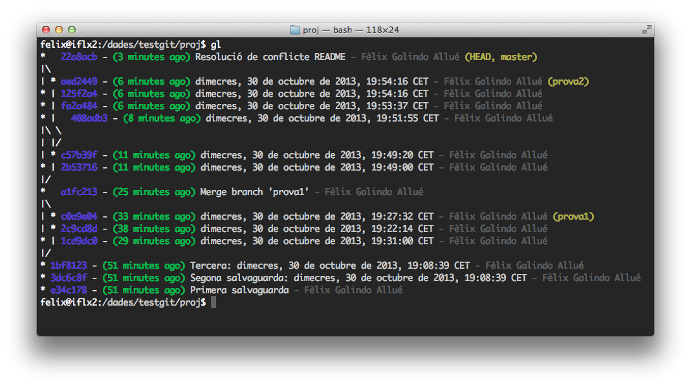

Git és una aplicació extraordinària per mantenir el control de versions d’un projecte de desenvolupament. Permet tant el control de versions local com remot, permetent de pas el treball col·laboratiu entre diferents programadors en un mateix projecte. En aquest post intento resumir les funcionalitats bàsiques de Git a través d’uns exemples clars i entenidors dels diferents casos d’ús més habituals.
Ús bàsic
Construïm un projecte de prova amb alguns arxius:
mkdir -p testgit/proj cd testgit/proj # Com si fos un projecte... echo "Hola" > README.txt # ... amb alguns arxius echo "Altre" > altre.txt echo "// Arxiu de codi font" > Classe.javaConsultem la informació que disposa Git sobre nosaltres:
git config --list git config user.name # Només aquesta dadaPodem canviar els paràmetres que volguem:
git config --global user.name "Linus Torvalds" git config --global user.email linus.torvalds@cesf.esQuan necessitem ajuda sobre qualsevol ordre de Git, podem invocar-la a través de l’ajuda:
git help configAra afegim la gestió de projectes amb Git:
git initApareix un directori ocult amb nom
.giten el directori del projecte.Ara podem afegir els arxius que hem creat a la gestió de projectes. Aquest procés s’anomena staging:
git add README.txt git add *.java git add . # Afegeix directori i subdirectorisAra comprovem els arxius pendents de ser gestionats:
git status echo "// Segon arxiu font" > Classe.java echo "Més text" >> README.txt git status # Marca els canvis no gestionats git add . git statusUn cop afegits els arxius desitjats, ja podem enviar (commit) els canvis disposats per ser processats:
git commit -m "Primera salvaguarda"Ara aquests canvis han estat processats i el sistema els ha desat. El projecte ara passa a un estat “net”, perquè tots els arxius estan igual que al dipòsit:
git statusPodem treballar amb la gestió de tot un directori encara que no volguem que tots els arxius siguin gestionats per Git. Això es pot aconseguir mantenint un arxiu anomenat
.gitignorea l’arrel del projecte:echo "aaa" > Main.class # Com si s'hagués compilat echo "bbb" > Classe.class # Com si s'hagués compilat echo "Més text" >> README.txt git status # Surten aquests arxius echo "*.[oa]" > .gitignore echo "*~" >> .gitignore echo "*.class" >> .gitignore git status # Surt el .gitignore però no els compilats git add . # Acceptem tots els canvis i els gestionem git statusPodem veure els canvis pendents de ser processats:
git diff --stagedUn cop afegits els arxius desitjats, ja podem enviar (commit) els canvis disposats per ser processats:
git commit -m "Segona salvaguarda: `date`"Es poden gestionar els arxius presents al dipòsit Git mitjançant les ordres
git rmigit mv:git rm altre.txt git rm \*~ git mv README.txt README git status git commit -a -m "Tercera: `date`" # -a equival a fer "git add ." abansPodem veure l’històric de canvis:
git log git log -p -2 git log --stat git log --pretty=format:"%h - %an, %ar : %s" git log --pretty=format:"%h %s" --graphPodem controlar els arxius que estan en staging (procés unstaging):
echo "arxiu auxiliar" > doc.txt git status git add . # Stage de tot el directori git status git reset HEAD doc.txt # Treure'l del "staged area" (Unstaging) git status rm doc.txtTambé podem anular canvis d’un arxiu:
echo "Tercera línia" >> README git status git checkout -- README # Desfer edició abans del "staging" cat README git statusLog bonic:
alias gl="git log --graph --abbrev-commit --decorate --date=relative \ --format=format:'%C(bold blue)%h%C(reset) - %C(bold green)(%ar)%C(reset) \ %C(white)%s%C(reset) %C(dim white)- %an%C(reset)%C(bold yellow)%d%C(reset)' \ --all" gl
Captura d’una sortida de l’àlies gl
Diverses línies de desenvolupament
El desenvolupador principal pot voler generar una branca del projecte on provar alguna tècnica nova.
Generar una nova branca i activar-la:
git branch prova1 # Definim la branca, però no l'activem git checkout prova1 # Canviem a aquesta brancaFem canvis i mostrem canvis al resum:
date > actual.txt git add . git commit -m "`date`" git log --pretty=format:"%h %s" --graphSi ho mirem des de la branca principal:
git checkout master git log --pretty=format:"%h %s" --graphVeurem que el darrer canvi no apareix. En aquesta branca no consta el canvi.
Ara el projecte principal evoluciona:
echo "arxiu" > nouarxiu.txt # L'últim checkout ens ha tornat a "master" git add . git commit -m "`date`"Podem veure tot el flux de canvis entre les diferents branques amb modificadors de
git log:git log --graph --oneline --all glSi els canvis són compatibles (no hi ha conflictes), les branques poden ser reunificades quan es vulgui:
git merge prova1 -m "Reunificació amb branca prova1"Ara generarem una situació de conflicte:
git branch prova2 echo "Línia en master" >> README git commit -a -m "`date`" git checkout prova2 echo "Línia en prova2" >> README git commit -a -m "`date`" git checkout master git merge prova2 -m "Reunificació amb branca prova2"L’arxiu README quedarà modificat. Haurem d’editar-lo manualment i definir quina versió de les mostrades és l’acceptada. Un cop editat l’arxiu amb conflicte, s’afegirà al staging i es farà el commit per acceptar-lo a la branca unificada:
git add README git commit -m "Reunificació amb branca prova2" glLes branques poden eliminar-se si es desitja. Per fer-ho han d’haver sofert un procés de
mergeamb la seva branca mare o ens avisarà del fet:git checkout master # tornem a la branca master git branch -d prova1 # cap problema git branch -d prova2 # se'ns queixarà git branch -D prova2 # fem l'eliminació forçada
Restauració d’arxius
Si sabem que un determinat arxiu ha estat modificat en algun moment i que hem perdut alguns blocs de codi interessants accidentalment o per descuit, sempre podrem restaurar-lo a aquell estat.
Generem una situació en què necessitem fer aquesta operació de restauració.
git checkout prova2 echo "Contingut interessant..." > nou.txt git add . git commit -m "nou arxiu afegit" echo "Contingut perdut!" > nou.txt git add . git commit -m "arxiu malbaratat"La segona versió de l’arxiu substitueix el contingut que s’havia afegit a la primera versió. Aquí tenim el punt en què necessitem restaurar a la primera versió.
Per poder restaurar l’arxiu necessitem saber en quin commit de quina branca es trobava aquell arxiu. Això ho podem descobrir combinant
git logigit diff:$ git log * ce10391 - (17 seconds ago) malament - Fèlix Galindo Allué (HEAD, prova2) * 93c2987 - (36 seconds ago) bo - Fèlix Galindo Allué * 616ab1b - (3 days ago) nou arxiu - Fèlix Galindo Allué (prova1) * 601416b - (4 days ago) dijous, 7 de novembre de 2013, 17:44:37 CET - Fèlix Ga * 2026f1d - (4 days ago) dijous, 7 de novembre de 2013, 17:34:52 CET - Fèlix Ga * a99796e - (4 days ago) Primera salvaguarda - Fèlix Galindo Allué $ git diff 93c2987 diff --git a/nou.txt b/nou.txt index 6c3a082..25a7eab 100644 --- a/nou.txt +++ b/nou.txt @@ -1 +1 @@ -bo +malamentCom veiem, en el commit identificat com a
93c2987teníem la pèrdua de línies de l’arxiu. Volem restaurar fins a aquella versió d’aquell arxiu.Ara podem restaurar l’arxiu fent ús de
git checkout:git checkout 93c2987 nou.txt more nou.txt # veurem la versió bona (antiga)L’arxiu ha estat restaurat a aquell estat. Si volem fixar-lo haurem de fer un nou commit, perquè ara com ara és com si l’haguéssim editat manualment:
git status # ens dirà que hi ha canvis pendentsSi al final no volem desar-lo d’aquella manera i volem tornar a la darrera versió desada, simplement farem:
git checkout HEAD nou.txt more nou.txt # veurem la versió dolenta (última) git status # ens dirà que res ha canviat
Entorn de diversos desenvolupadors
El control de versions de Git vist fins ara és el corresponent a projectes locals (aquells que són realitzats en un sol directori d’una única màquina).
Hem de considerar dues situacions comunes:
Potser volem que un projecte pugui evolucionar incorporant nous desenvolupadors que desenvolupin mòduls o variants del software independentment i incorporar els seus canvis segons uns objectius o validant les seves característiques afegides al projecte original.
De vegades, potser un sol desenvolupador pot estar desenvolupant el seu únic projecte en diferents màquines (ordinador fix - ordinador portàtil - ordinador de la feina).
Tots dos casos ens obliguen a disposar d’un control de versions remot, és a dir, que puguem bolcar els nostres canvis a un lloc comú i disponible des de diversos equips i/o ubicacions. Això també és permès amb Git.
Les ubicacions disponibles per al remote del nostre projecte pot prendre diferents formes segons el cas:
- Un servidor especialitzat amb servei SSH i usuaris definits per a què hi puguin accedir,
- Un servidor especialitzat públic, com GitHub o Gitlab, que ofereix servei d’hostatge de projectes públic i/o privats,
- Un directori compartit en xarxa, muntat en els diferents equips dels diferents desenvolupadors com a unitat de xarxa,
- Un directori vinculat a algun servei d’emmagatzematge en el núvol, com Dropbox o Google Drive.
En tots els casos disposarem d’una ruta o camí que indicarà la ubicació del projecte. Serà mitjançant aquesta ruta que el projecte podrà ser duplicat en altres equips per altres desenvolupadors.
Exemples de rutes de projecte:
| Tipus | Exemple |
|---|---|
| Gitlab (via HTTPS) | https://gitlab.com/felix.galindo/jekyll-liquid-latex-plugin.git |
| Gitlab (via SSH) | git@gitlab.com:felix.galindo/jekyll-liquid-latex-plugin.git |
| Servidor SSH privat | user:pass@servidor.com:/projectes/projecte.git |
| Directori local | /projectes/projecte.git |
| Directori Dropbox | ~/Dropbox/projectes/project.git |
Suposarem ara un projecte ubicat a un directori local privat d’un usuari com a mostra per entendre la funcionalitat bàsica dels remote.
Creem un projecte buit en el lloc on volem dipositar-lo (remote):
mkdir -p ~/Dropbox/remotes git init --bare ~/Dropbox/remotes/projecte.git ls ~/Dropbox/remotes/projecte.gitVeurem tota una estructura de directoris que allotjaran la versió remota del nostre projecte.
Ara crearem la versió local on editarem el projecte:
cd ~/testgit git clone ~/Dropbox/remotes/projecte.git ls cd projecte ls -la # Veurem el directori .git habitualEl projecte queda vinculat al remote origen, de manera que les variables corresponents prenen els valors adients:
git config --list # Veurem remote.origin.url, per exempleTambé existeix l’ordre
git remoteper controlar les variables remotes. Podem utilitzar-lo per llistar els valors actuals:git remote -v git remote show originAra ja podem començar a treballar en el nostre projecte:
echo "Documentació" > README.md mkdir src echo "// Arxiu font" > src/Main.java git add . git commit -m "Commit inicial" gl # Veurem el nostre commitQuan hem acabat d’editar localment, podem “pujar” els canvis al servidor remot amb una operació push:
git push origin masterAmb
originindiquem que el push s’ha d’efectuar contra el projecte origen de la clonació, mentre que ambmasterindiquem que ho faci a la branca principal del projecte. Això és obligatori només la primera vegada que es fa el push. Les següents ho recorda si no ho canviem passant els arguments agit push:echo "Millorat" >> README.md git add . git commit -m "Millores en docs" git pushSuposem ara que un segon desenvolupador vol o ha de participar en el projecte de software. Per la seva banda, realitzarà unes tasques similars a les anteriorment descrites:
git config --global user.name "Jordi Galindo López" git config --global user.email "jordi@flx.cat" cd ~/testgit git clone ~/Dropbox/remotes/projecte.git jordi cd jordi glAra aquest desenvolupador farà canvis:
echo "Hola" >> jordi.txt git add . git commit -m "Afegit jordi.txt" git push origin master glEl procés d’edició i millora del software pot continuar indefinidament per ambdues bandes. El problema és quan s’intenta fer un push abans d’adquirir els canvis fets per l’altre(s) usuari(s) involucrat al projecte:
cd ../projecte git config --global user.name "Linus Torvalds" git config --global user.email "linus.torvalds@cesf.es" echo "Més documentació" >> README.md git add . git commit -m "Documentació millorada" git push # GENERARÀ UN ERROREl primer desenvolupador ha intentat fer un push quan encara no ha descarregat els darrers canvis fets pel segon desenvolupador (que també havia fet un push). En aquests casos, el desenvolupador que intenti fer el segon push ha de descarregar els canvis fets per l’altre primer, amb una operació pull:
git pull # Ens farà editar un missatge específic git push # ARA SÍ FUNCIONARÀ gl # Veuràs la unió com si fos un "merge"Podem utilitzar
git pull --no-editper a què faci servir un missatge preconfigurat del tipus “Merge branch … of …”.
Existeix l’ordre git fetch, que fa el mateix que git pull, però no té en compte les branques del projecte. Normalment es fa servir git pull per ser més potent que l’altra.
GitHub/Gitlab
GitHub i Gitlab ens ofereixen la possibilitat d’allotjar projectes de desenvolupament tot definint els nostres remotes en el seu servidor.
Segons el tipus de compte que creem, podrem disposar de projectes públics (versió gratuïta) o privats (versió de pagament).
La diferència principal respecte a tot el que s’ha vist fins ara és que el procés de push i pull es realitza sobre un únic remote.
Si un desenvolupador vol clonar el projecte de manera pública, podrà fer-ho amb el procés que anomenarem “fork”. El procés de fork crearà un projecte nou, clonació del projecte original, on el desenvolupador disposarà de tota la infraestructura per evolucionar el seu clon del projecte original. Es perdrà el seguiment del projecte original, però el desenvolupament serà possible.
Quan aquest desenvolupador vulgui comunicar els canvis que ha fet sobre el projecte original al desenvolupador del projecte principal, ho farà mitjançant una operació de “pull request”, en què el desenvolupador original verificarà els canvis fets i validarà si vol o no adquirir-los.
Si el desenvolupador original accepta les modificacions, els canvis seran afegits al projecte original igual que si es tractés d’un merge convencional. El projecte original haurà crescut en complexitat i podrà continuar sent desenvolupat com a línia principal i original del projecte.
Referències externes
- Lloc oficial de Git:
http://git-scm.com/doc - Referència ràpida:
http://gitref.org/ - Lloc de GitHub:
https://github.com/ - Lloc de Gitlab:
https://gitlab.com/